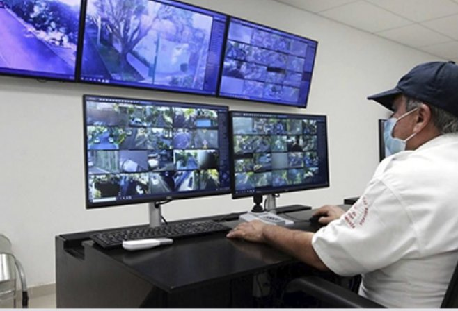
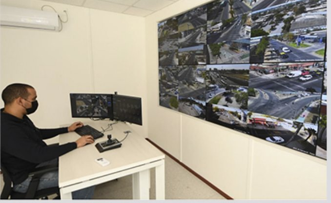
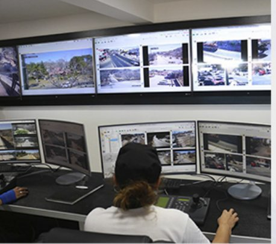
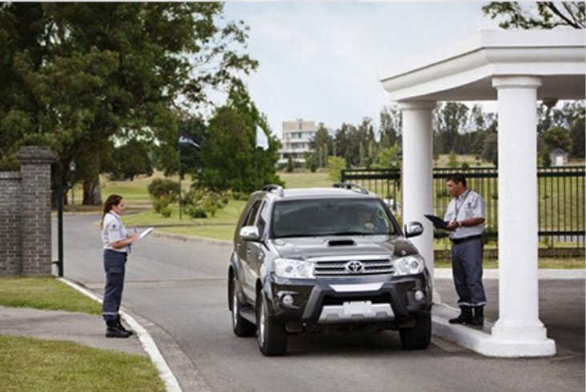
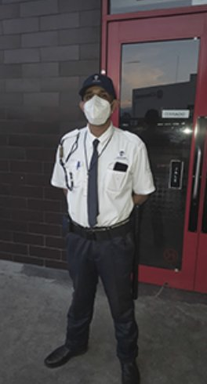
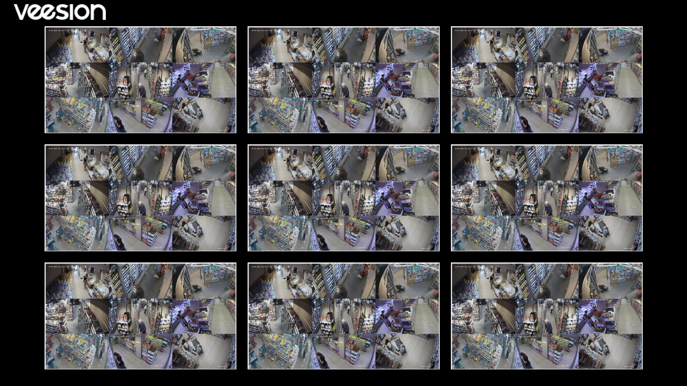

Operacion activa en Buenos Aires | Monitoreo 24/7 | Integracion con Veesion
Seguridad privada con visualizacion operativa en tiempo real.
Disenamos coberturas, monitoreo, control de accesos y capas de inteligencia artificial para reducir perdidas, acelerar la respuesta y ordenar la toma de decisiones frente al cliente.
Command layer
Live
Reduccion estimada de perdidas
72%
impacto potencial
Respuesta por capa
Secuencia de intervencion
- 01 gesto sospechoso detectado
- 02 alerta al operador
- 03 validacion humana
- 04 accion antes de la salida
Feed operativo

Capacidad
No vendemos horas hombre aisladas. Disenamos una arquitectura de seguridad.
Integramos personas, procedimientos, monitoreo y lectura visual de eventos para que la operacion del cliente tenga trazabilidad, criterio y capacidad de respuesta.
Control de acceso
Ingreso y egreso de personas y vehiculos con validacion, registro y presencia operativa visible.
Monitoreo y videovigilancia
Centros de control y operadores que convierten camaras en informacion accionable.
Custodia y cobertura
Dispositivos presenciales para plantas, countries, edificios, retail y eventos especiales.
Inteligencia aplicada
Integracion con Veesion para detectar conductas de riesgo sin reemplazar la infraestructura de camaras.
Capa IA
Veesion como acelerador. LATAM SEG como operador real.
La IA no reemplaza el criterio humano: reduce el tiempo entre gesto, alerta y respuesta. Esa diferencia cambia el resultado.
Lo que hace la IA
Analiza gestos y microconductas sobre video existente para disparar alertas antes del hurto consumado.
Lo que hace LATAM SEG
Define protocolos, valida eventos, coordina la intervencion y adapta la tecnologia al contexto del cliente.
Deteccion99%
Video corto<30s
Sin recableado0 obra
Monitor IA
Partner Veesion Argentina
Demo Veesion | deteccion de gestos y alerta operativa
Abrir video


Operacion
Visuales que explican como trabajamos frente al cliente.
La pagina sigue siendo comercial, pero muestra proceso, control y datos de una forma mucho mas convincente.
Cobertura
Dispositivo presencial
Guardias, protocolos, puntos criticos, accesos y rondas.
Lectura
Monitoreo + IA
Video, analitica y priorizacion de eventos para accionar antes.
Decision
Respuesta coordinada
Operador, supervisor y cliente con una sola lectura de la situacion.
Casos y escenas
El cliente no necesita imaginar la operacion. La ve.

Country privado
Acceso vehicular controlado
Identificacion, registro y presencia operativa visible en el punto de entrada.

Servicio presencial
Personal entrenado
Cobertura, supervision y criterio humano sostenido por tecnologia.

Centro de monitoreo
Lectura y coordinacion 24/7
Operadores, alertas y trazabilidad en una sola capa visual.
Contacto
Disenamos tu cobertura con criterio operativo y una capa visual mucho mas fuerte.
Mostranos la operacion, la cantidad de puntos y el nivel de riesgo. Te devolvemos propuesta y enfoque.